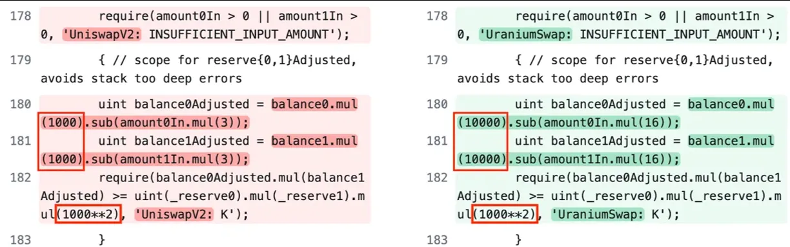
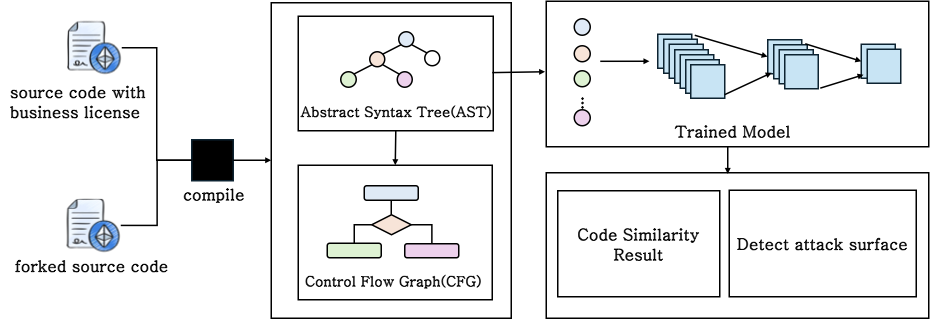
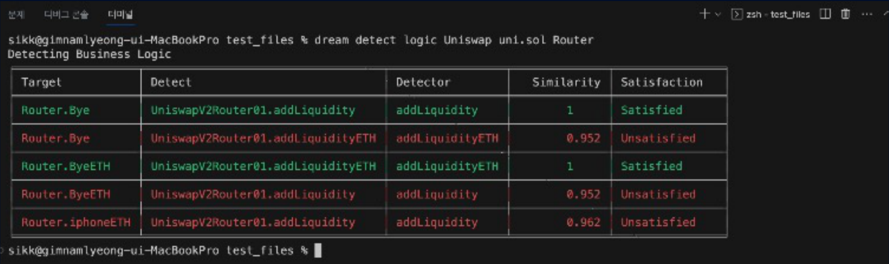

내용
오픈소스 컨트랙트를 복제해 고칠 때 원본에 없던 결함이 생깁니다.
- 피해 규모
- 2022년에는 탈중앙 금융(DeFi) 예치 자산의 약 6%인 30억 달러가 해킹으로 탈취됐습니다.
- 실제 사례
- 2021년 Uranium Finance는 Uniswap V2를 복제하며 비율 설정을 잘못 고쳐 약 5천만 달러를 잃었습니다.

Publication
오픈소스 컨트랙트를 고쳐 쓸 때 원본과 달라진 코드를 유사도로 먼저 찾아 우선 검토하는 방법을 제안했습니다. 전체를 같은 비중으로 보지 않고 위험한 영역을 좁힙니다.
오픈소스 컨트랙트를 복제해 고칠 때 원본에 없던 결함이 생깁니다.

원본과 달라진 부분을 유사도로 먼저 찾고 그 부분을 우선 검토합니다.

논문 본문에는 정량 실험이 없고 사례 설명과 발표 시연으로 뒷받침했습니다.

복제한 코드에서 달라진 부분을 유사도로 찾아 점검 범위를 좁히는 방법을 제안했습니다.
이 발표를 확장한 논문을 융합보안논문지에 게재했습니다.